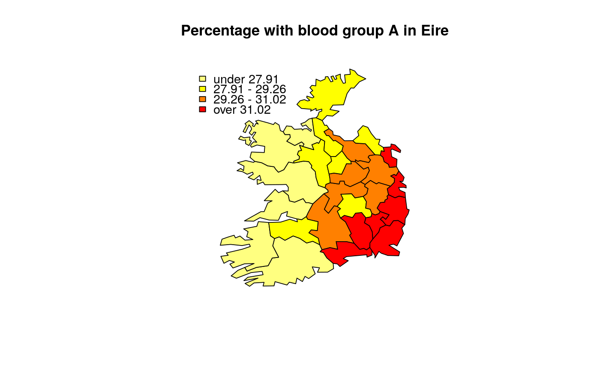
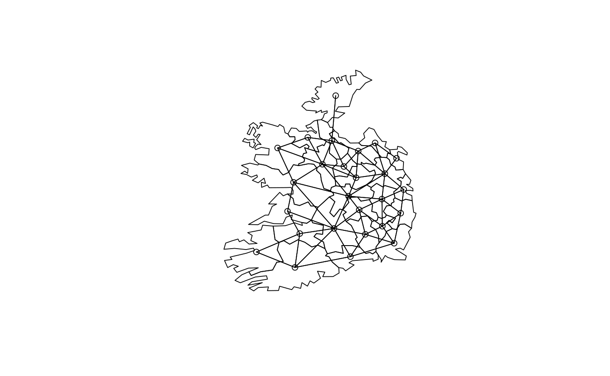
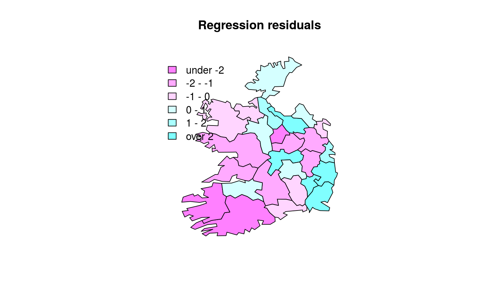
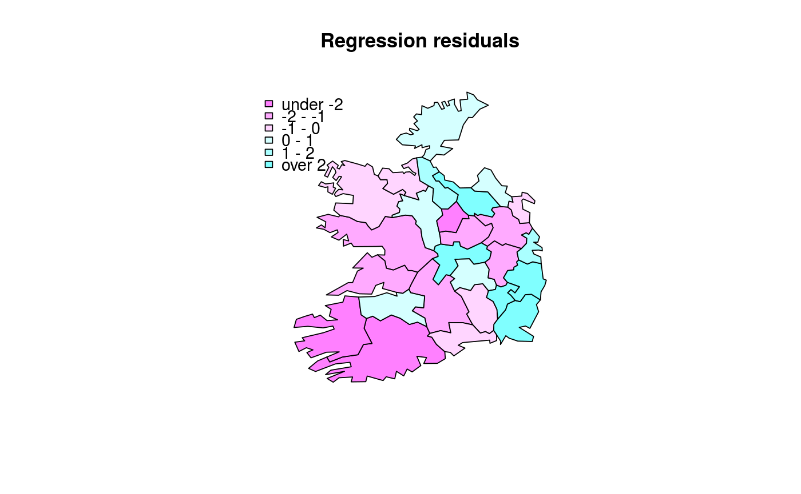
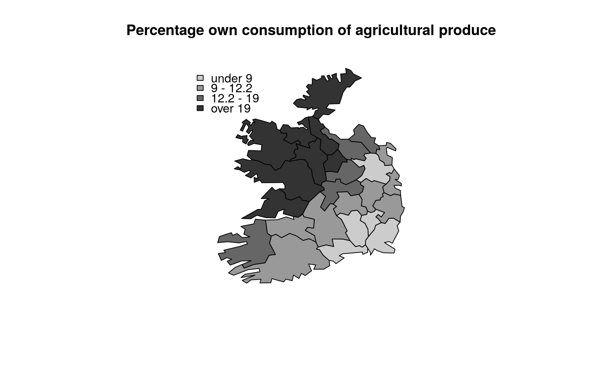

The Eire data set has been converted to shapefile format and placed in the etc/shapes directory. The initial data objects are now stored as a SpatialPolygonsDataFrame object, from which the contiguity neighbour list is recreated. For purposes of record, the original data set is retained.
The eire.df data frame has 26 rows and 9 columns. In addition, polygons of the 26 counties are provided as a multipart polylist in eire.polys.utm (coordinates in km, projection UTM zone 30). Their centroids are in eire.coords.utm. The original Cliff and Ord binary contiguities are in eire.nb.
This data frame contains the following columns:
A Percentage of sample with blood group A
towns Towns/unit area
pale Beyond the Pale 0, within the Pale 1
size number of blood type samples
ROADACC arterial road network accessibility in 1961
OWNCONS percentage in value terms of gross agricultural output of each county consumed by itself
POPCHG 1961 population as percentage of 1926
RETSALE value of retail sales British Pound000
INCOME total personal income British Pound000
names County names
Upton and Fingleton 1985, - Bailey and Gatrell 1995, ch. 1 for blood group data, Cliff and Ord (1973), p. 107 for remaining variables (also after O'Sullivan, 1968). Polygon borders and Irish data sourced from Michael Tiefelsdorf's SPSS Saddlepoint bundle, originally hosted at: http://geog-www.sbs.ohio-state.edu/faculty/tiefelsdorf/GeoStat.htm.
library(maptools)#>library(rgdal) library(spdep)#> Error: package ‘spData’ required by ‘spdep’ could not be found#> OGR data source with driver: ESRI Shapefile #> Source: "/home/robin/repos/spData/inst/shapes/eire.shp", layer: "eire" #> with 26 features #> It has 10 fields#> Error in poly2nb(eire): could not find function "poly2nb"data(eire) # Eire physical anthropology blood group data summary(eire$A)#> Min. 1st Qu. Median Mean 3rd Qu. Max. #> 23.92 27.92 29.26 29.53 30.94 35.86brks <- round(fivenum(eire$A), digits=2) cols <- rev(heat.colors(4)) plot(eire, col=cols[findInterval(eire$A, brks, all.inside=TRUE)])title(main="Percentage with blood group A in Eire")plot(eire)plot(eire.nb, coordinates(eire), add=TRUE)#> Error in xy.coords(x, y, xlabel, ylabel, log): 'x' and 'y' lengths differ#> Error in lag.listw(nb2listw(eire.nb), eire$A): could not find function "lag.listw"summary(lA)#> Error in summary(lA): object 'lA' not found#> Error in moran.test(eire$A, nb2listw(eire.nb)): could not find function "moran.test"#> Error in geary.test(eire$A, nb2listw(eire.nb)): could not find function "geary.test"cor(lA, eire$A)#> Error in is.data.frame(x): object 'lA' not found#> Error in moran.plot(eire$A, nb2listw(eire.nb), labels = eire$names): could not find function "moran.plot"A.lm <- lm(A ~ towns + pale, data=eire) summary(A.lm)#> #> Call: #> lm(formula = A ~ towns + pale, data = eire) #> #> Residuals: #> Min 1Q Median 3Q Max #> -3.6420 -1.0340 -0.3428 1.0263 4.0460 #> #> Coefficients: #> Estimate Std. Error t value Pr(>|t|) #> (Intercept) 27.5728 0.5448 50.614 < 2e-16 *** #> towns -0.3595 2.9672 -0.121 0.904610 #> pale 4.3419 1.0851 4.001 0.000561 *** #> --- #> Signif. codes: 0 ‘***’ 0.001 ‘**’ 0.01 ‘*’ 0.05 ‘.’ 0.1 ‘ ’ 1 #> #> Residual standard error: 2.018 on 23 degrees of freedom #> Multiple R-squared: 0.5551, Adjusted R-squared: 0.5164 #> F-statistic: 14.35 on 2 and 23 DF, p-value: 9.014e-05 #>res <- residuals(A.lm) brks <- c(min(res),-2,-1,0,1,2,max(res)) cols <- rev(cm.colors(6)) plot(eire, col=cols[findInterval(res, brks, all.inside=TRUE)])title(main="Regression residuals")#> Error in lm.morantest(A.lm, nb2listw(eire.nb)): could not find function "lm.morantest"#> Error in lm.morantest.sad(A.lm, nb2listw(eire.nb)): could not find function "lm.morantest.sad"#> Error in lm.LMtests(A.lm, nb2listw(eire.nb), test = "LMerr"): could not find function "lm.LMtests"# Eire agricultural data brks <- round(fivenum(eire$OWNCONS), digits=2) cols <- grey(4:1/5) plot(eire, col=cols[findInterval(eire$OWNCONS, brks, all.inside=TRUE)])title(main="Percentage own consumption of agricultural produce")#> Error in moran.plot(eire$OWNCONS, nb2listw(eire.nb)): could not find function "moran.plot"#> Error in moran.test(eire$OWNCONS, nb2listw(eire.nb)): could not find function "moran.test"e.lm <- lm(OWNCONS ~ ROADACC, data=eire) res <- residuals(e.lm) brks <- c(min(res),-2,-1,0,1,2,max(res)) cols <- rev(cm.colors(6)) plot(eire, col=cols[findInterval(res, brks, all.inside=TRUE)])title(main="Regression residuals")#> Error in lm.morantest(e.lm, nb2listw(eire.nb)): could not find function "lm.morantest"#> Error in lm.morantest.sad(e.lm, nb2listw(eire.nb)): could not find function "lm.morantest.sad"#> Error in lm.LMtests(e.lm, nb2listw(eire.nb), test = "LMerr"): could not find function "lm.LMtests"#> Error in localmoran.sad(e.lm, eire.nb, select = 1:length(slot(eire, "polygons"))): could not find function "localmoran.sad"